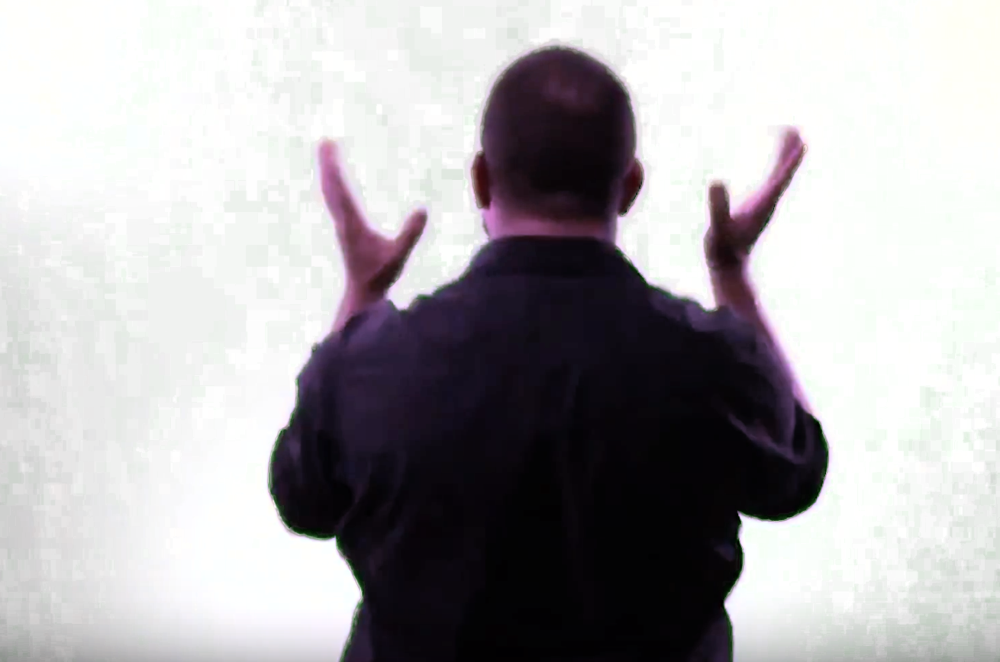
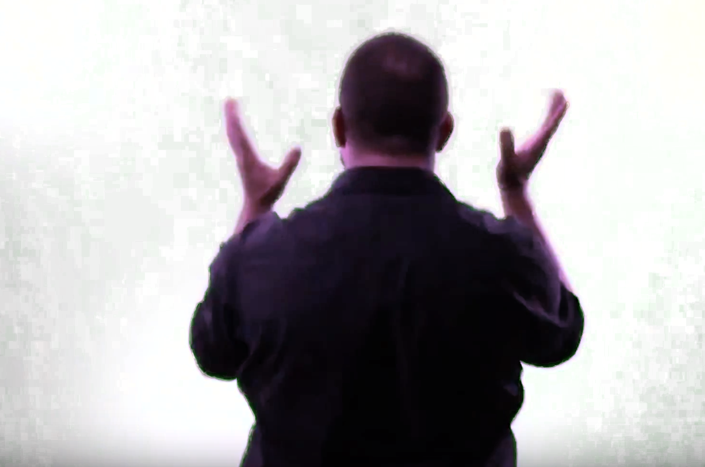
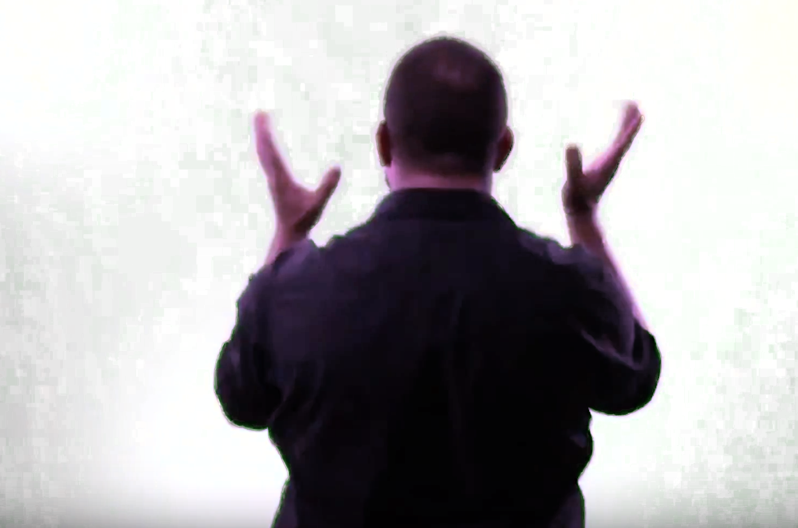
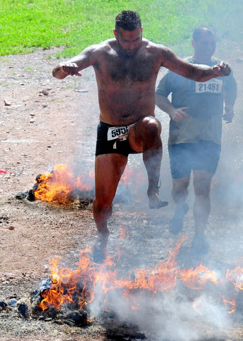
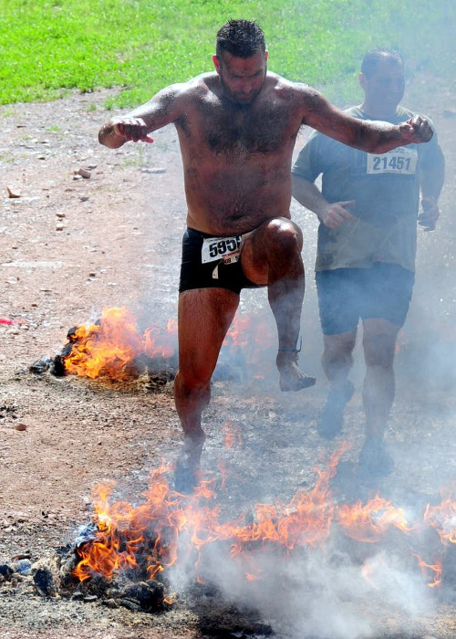

Sources of Inspiration
Several Rainbows exist on the Earth. You have to seek them out right after the rain because the rain makes the arrows where the bow uses to shoot out back into the heaven.
 

Several Rainbows exist on the Earth. You have to seek them out right after the rain because the rain makes the arrows where the bow uses to shoot out back into the heaven.

Every time I went into the pond, it is simply question of not thinking. If you do not think, and simply do it. It is extremely easy to do. If you think, it becomes an impossiblity.
When I was practicing at the Shaolin Temple in New York, I asked a monk how to start training for such things. He shrugged and said something like:
Oh, I guess you just go and do it. Keep doing it until you get it.
 
